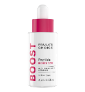
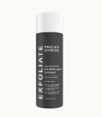
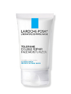

| Picture | Product's Name | Ingredients | Function |
|---|---|---|---|
|  | Paula's Choice Peptide Booster | Tripeptide-1, Palmitoyl Tripeptide-1, Palmitoyl Tetrapeptide-7, Palmitoyl Hexapeptide-12, Myristoyl Hexapeptide-16, Myristoyl Pentapeptide-17, Hexanoyl Dipeptide-3 Norleucine Acetate, Azelaoyl Bis-Dipeptide-10 | Helps skin to look and act younger by targeting precise areas to address concerns like loss of firmness, dullness, wrinkles and discolorations. A true anti-aging multi-tasker, it accelerates your results when added to any skincare routine. |
|  | Paula's Choice 2% BHA Liquid Exfoliant | Water (Aqua), Methylpropanediol, Butylene Glycol, Salicylic Acid, Polysorbate 20, Camellia Oleifera (Green Tea) Leaf Extract, Sodium Hydroxide, Tetrasodium EDTA | Skin becomes dull, dry and congested when dead skin cells build up on its surface. Beta hydroxy acid (BHA, also known as salicylic acid) mimics the natural exfoliation process of younger skin by helping it shed extra layers while unclogging and clearing pores. |
|  | Toleriane Double Repair Face Moisturizer with Niacinamide | Water (La Roche-Posay Prebiotic Thermal Water), Glycerin, Dimethicone, Hydrogenated Polyisobutene, Niacinamide, Ammonium, Polyacryloyldimethyl Taurate, Myristyl Myristate, Stearic Acid, Ceramide Np, Potassium Cetyl Phosphate, Isobutane, Glyceryl Stearate Se, Sodium Hydroxide, Myristic Acid, Palmitic Acid, Capryloyl | This face moisturizer provides up to 48-hour hydration&helps restore skin's barrier after 1 hour. Won't clog pores. Oil-free face moisturizer helps hydrate & restore healthy looking skin. Formulated with a high concentration of Prebiotic Thermal Water, Ceramide-3, Niacinamide & Glycerin. Suitable for face & hands. Tested on sensitive skin. |